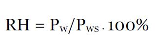
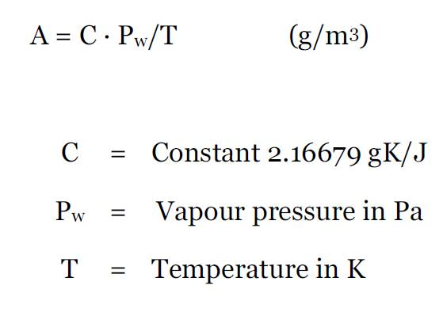
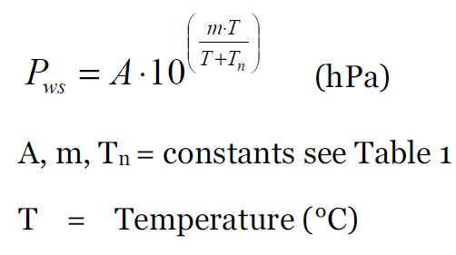
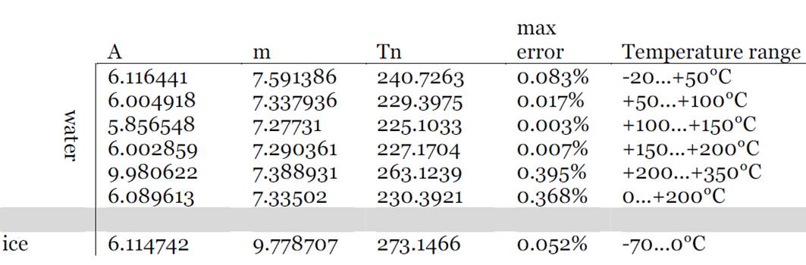
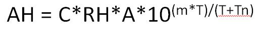

## Fourier Analysis of Absolute Humidity ## HO YONG LEE ## EE G6904
## What is Relative Humidity? * Relative humidity measures the amount of water vapor present, but relative to the air temperature. * Usually defined as a percentage of the water vapor pressure over the saturation water vapor pressure.
## What is Absolute Humidity? * Absolute Humidity is the amount of water vapor present per volume, usually measured in g/m^3, independent of the air temperature. * Compared to relative humidity, which indicates how much water vapor there is compared to how much water vapor there can be at saturation, absolute humidity just indicates how much water vapor there is.
Formulas
 
 
Absolute Humidity Formula

Formula to calculate Absolute Humidity in terms of air temperature and relative humidity
C, m, Tn, A are all constants
T = air temperature
## Data Parameters * Timeframe of last 64 months from January 2014 to April 2019. * Data taken from five stations located at NYC, Miami, Memphis, Denver, San Francisco * Data taken from Climatological Data from Local Stations. * Source: https://www.ncdc.noaa.gov/cdo-web/datasets
## Main Objectives * To see if absolute humidity can be shown to have cyclic properties using Fourier Analysis * If location has any effect on the how absolute humidity can vary if it does vary cyclically
## References * https://www.vaisala.com/sites/default/files/documents/Humidity_Conversion_Formulas_B210973EN-F.pdf